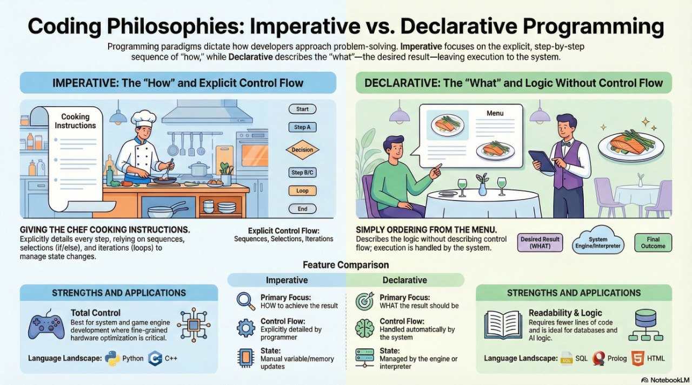

Declarative vs Imperative Programming
Programming paradigms dictate how we solve problems with code. Imperative languages explicitly instruct the computer how to do something step by step. Declarative languages describe what the end result should be.
Learning Objectives
- 12.5.1.1 Compare declarative and imperative programming languages
- 12.5.1.2 Create a simple expert system
- 12.5.1.3 Describe program compilation stages: lexical and syntactic analysis, code generation, and optimization
Video Explanation
Watch a visual walkthrough of this topic
Conceptual Anchor
The Restaurant Analogy
Imperative = giving the chef step-by-step cooking instructions: "Boil water, add
pasta, cook 10 min, drain, add sauce."
Declarative = just ordering from the
menu: "I want pasta bolognese." You describe WHAT you want, not HOW to make it.

Rules & Theory
Imperative Programming
- Definition: A paradigm that uses statements that change a program's state. It relies on explicit control flow using sequence, selection (if/else), and iteration (loops).
- Where it is applied: System programming, game engine development, and general-purpose software (e.g., Python, C++, Java, Pascal).
- Benefits:
- Direct control over each step of execution.
- Programmers can optimize for specific hardware or constraints.
- Can handle a wide range of problems and domains.
- Drawbacks:
- Can become complex and hard to maintain, especially for large programs.
- Managing state and control flow explicitly can lead to errors.
- Focuses more on how things are done rather than what is achieved.
Declarative Programming
- Definition: A paradigm that expresses the logic of a computation without describing its control flow. It relies on facts, rules, and queries rather than sequential steps.
- Where it is applied: Database management (SQL), artificial intelligence and logic programming (Prolog), and web page structuring (HTML).
- Benefits:
- Code is often easier to read and understand.
- Often fewer lines of code are required for the same task.
- Easier to write programs that take advantage of multiple cores.
- Drawbacks:
- Abstracts away control flow, which may not allow for fine-grained optimization.
- Best suited for specific types of tasks (e.g., data querying, configuration).
- May not be as performant in low-level, resource-constrained environments like embedded systems.
Comparison Matrix
| Feature | Imperative | Declarative |
|---|---|---|
| Focus | HOW to achieve the result | WHAT the result should be |
| Control flow | Explicitly detailed by the programmer (loops, conditions, sequences) | Handled automatically by the system or interpreter |
| State | Requires explicit control of variable updates and state changes | Programmer does not manage low-level details like memory allocation or variable assignments |
Code Comparison
# IMPERATIVE (Python) — HOW to find even numbers
numbers = [1, 2, 3, 4, 5, 6, 7, 8]
evens = []
for n in numbers: # Iteration
if n % 2 == 0: # Selection
evens.append(n) # Sequence & State change
print(evens) # Output: [2, 4, 6, 8]-- DECLARATIVE (SQL) — WHAT you want
SELECT * FROM numbers WHERE value % 2 = 0;Expert Systems
| Component | Purpose |
|---|---|
| Knowledge Base | A collection of facts and rules about a specific domain. |
| Inference Engine | Applies the rules to the known facts to derive new conclusions. |
| User Interface | Allows users to input queries and receive answers. |
% Simple Expert System in Prolog (Declarative)
% Knowledge Base — Facts:
animal(dog).
animal(cat).
has_fur(dog).
has_fur(cat).
says(dog, woof).
says(cat, meow).
% Rules:
pet(X) :- animal(X), has_fur(X).
% Query (Asking the engine WHAT we want to know):
?- pet(dog). % Result: true
?- says(cat, Y). % Result: Y = meowCompilation Stages
| Stage | What It Does | Example |
|---|---|---|
| 1. Lexical Analysis | Breaks source code into tokens (keywords, identifiers, operators). Removes whitespace and comments. | x = 5 + 3 → tokens: [x] [=] [5] [+] [3] |
| 2. Syntax Analysis | Checks if tokens follow language grammar rules; builds a parse tree. | Detects x = 5 + as a syntax error (missing operand). |
| 3. Code Generation | Converts the validated parse tree into machine code (binary instructions) or intermediate object code. | ADD R1, R2 → 00101001... |
| 4. Optimization | Improves code efficiency (execution speed/memory usage) without changing the final results. | Removes unused variables or redundant loops. |
Common Pitfalls
SQL is NOT Imperative
SQL says what data you want, not how to find it.
SELECT * FROM students WHERE age > 16 doesn't specify searching algorithms (like
linear or binary search) — the
database engine decides the optimal path.
Tasks
List 3 imperative and 3 declarative programming languages.
Explain the difference between Sequence, Selection, and Iteration in an imperative language.
Write a simple expert system (facts + rules) in Prolog for diagnosing 3 common computer faults based on error symptoms.
Self-Check Quiz
Q1: What is the main difference between imperative and declarative?
Q2: What are the 3 main components of an Expert System?
Q3: At which compilation stage are comments and whitespaces removed?